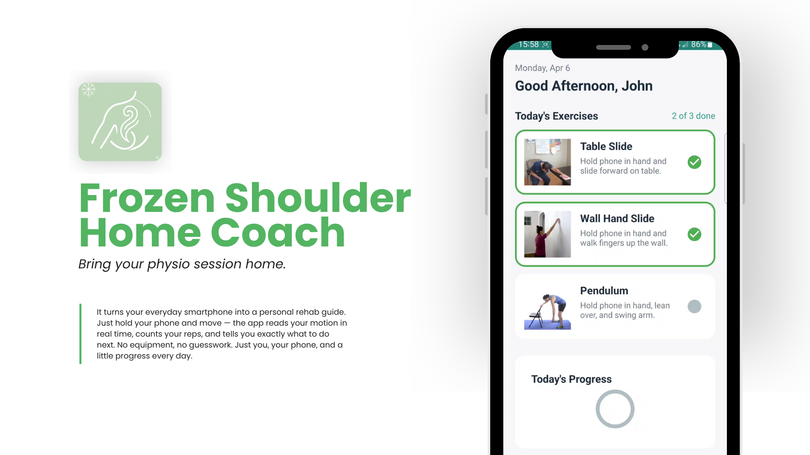
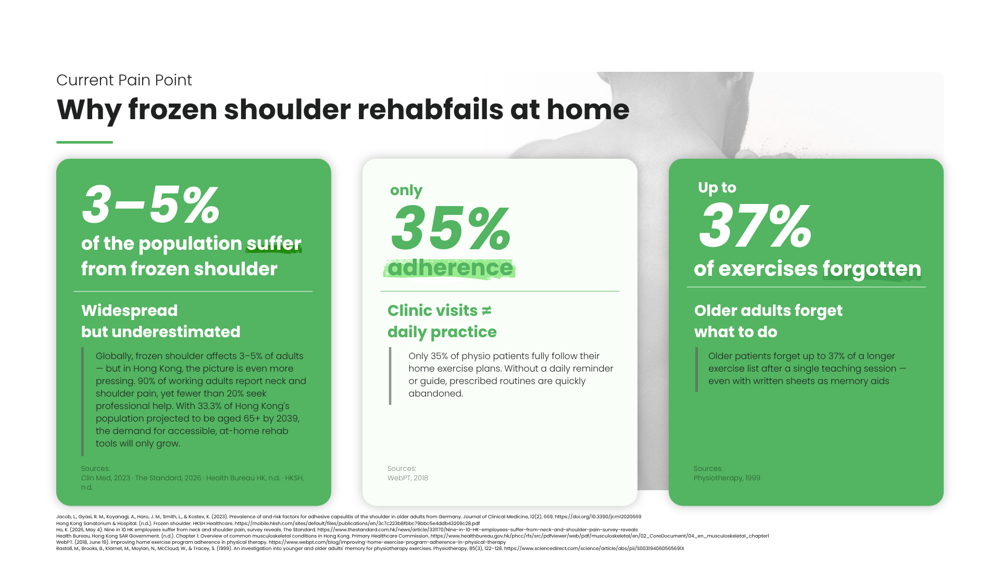
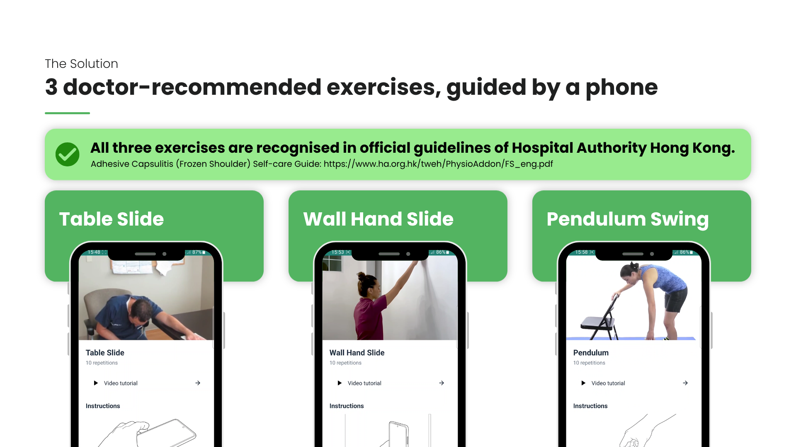
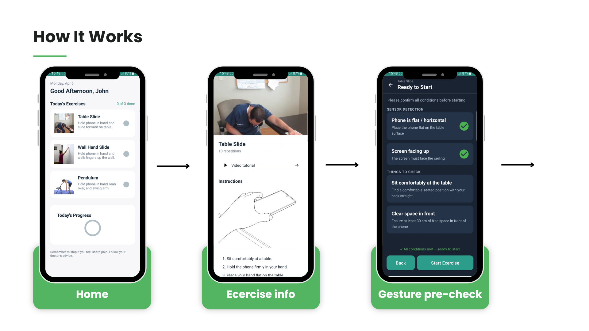
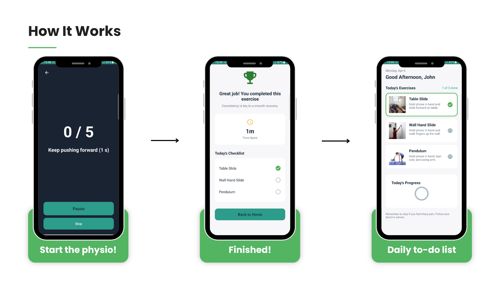
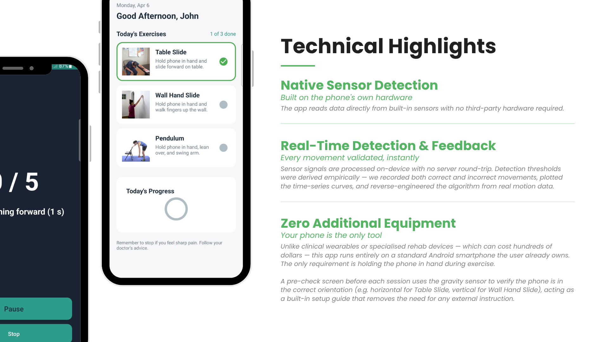
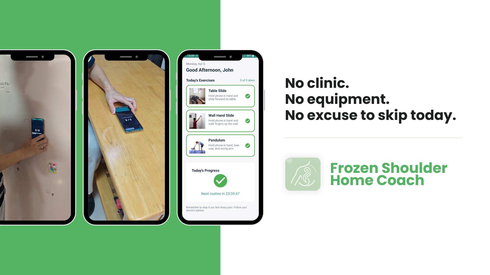
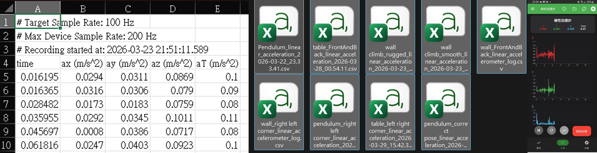
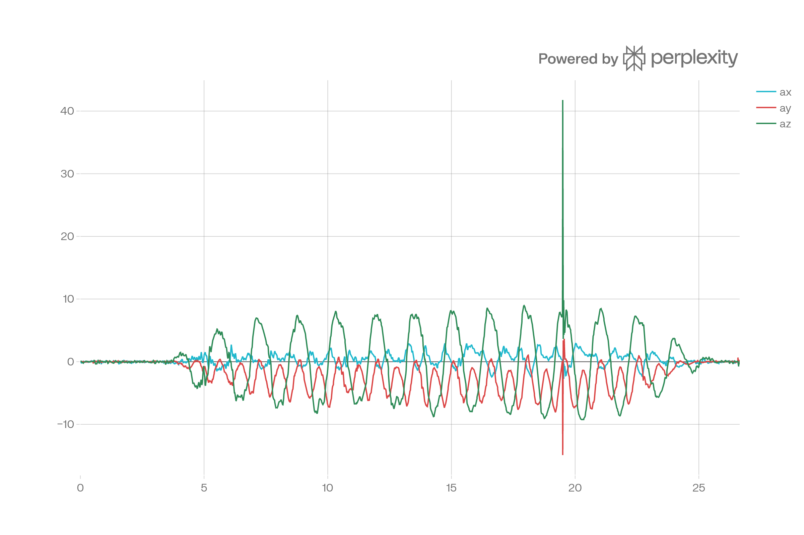

Frozen Shoulder Home Coach
Bring your physio session home — no equipment, no guesswork, just your phone.







The Problem
Frozen shoulder affects roughly 3–5% of adults globally, but the numbers in Hong Kong are harder to ignore: 90% of working adults report neck and shoulder pain, yet fewer than 20% seek professional help. With 33.3% of Hong Kong's population projected to be aged 65 or above by 2039, the need for accessible, at-home rehabilitation tools is only going to grow.
The clinical gap is well-documented. Only 35% of physiotherapy patients stick to their prescribed home exercise plans without a daily guide or reminder, routines get dropped quickly. Older patients forget up to 37% of a longer exercise list after a single teaching session, even with written instruction sheets to help.
The problem isn't a lack of medical knowledge: it's the absence of a tool that connects the clinic to everyday life, using hardware people already own.
Existing solutions either require expensive wearables, rely on passive video demos with no real-time feedback, or assume a level of technical confidence that many older adults don't have. This app takes a different approach for Hong Kong's physiotherapy and rehabilitation space: a motion-guided coach that runs entirely on the phone already in your pocket — no equipment, no subscriptions, no barriers.
The Process
Concept & Scope
Frozen Shoulder Home Coach walks users through three doctor-recommended rehabilitation exercises: Table Slide, Wall Hand Slide, and Pendulum Side-to-Side, using only the phone's built-in motion sensors. No wearables, no external equipment. All three exercises come from the Hospital Authority Hong Kong's official Adhesive Capsulitis Self-care Guide.
This version is a functional MVP built solo in 2 weeks as the second assignment for SM3607. The three exercises are a focused starting point, the longer-term vision is a full rehabilitation library similar to gym coaching apps, where more exercises can be added over time. The goal here is to validate the core motion-detection approach and show a workable product direction for Hong Kong's physiotherapy and rehabilitation space.
Reverse Engineering the Algorithms
The first approach was straightforward: define expected motion characteristics and set fixed thresholds manually. It fell apart quickly. Tuning thresholds meant a full reinstall cycle for every change, and guessed values were consistently off, especially for the Pendulum, where the acceleration profile was impossible to predict without real data.
The turning point was recording actual movement data.

- Performed each exercise while logging raw accelerometer and gravity sensor output
- Used AI tools to visualise the time-series curves: making one correct repetition clearly visible as a data pattern
- Compared correct movement curves against deliberately wrong ones (diagonal slides, too-fast swings, missing holds) to find the key signal differences
- Worked backwards from the data to the algorithm: deriving thresholds from measured averages rather than guessing

This approach also solved an AI collaboration problem. Because these specific rehabilitation gestures don't exist in any public training dataset, AI tools had no useful domain knowledge to start with. By feeding in recorded sensor curves as context, the AI could actually help with algorithm design, using real evidence instead of guesswork. The result was faster iteration and much more accurate detection thresholds across all three exercises.
Algorithm Design: Matching Strategy to Motion
Each exercise needed a different algorithm, chosen based on how the movement actually looks, not a one-size-fits-all template.
Table Slide & Wall Hand Slide — State Machine
Both exercises follow a clear, step-by-step structure: start position → controlled slide → hold at end → return. A state machine is a natural fit:
IDLE → SLIDING_FORWARD → HOLDING → SLIDING_BACKWARD → IDLE
TYPE_LINEAR_ACCELERATIONreads X/Y/Z motion; the Y axis is treated as the main direction of travelTYPE_GRAVITYchecks phone orientation: the detector won't count a rep if the phone isn't in the right position (horizontal for Table Slide, vertical for Wall Hand Slide)- A 2-second baseline calibration at IDLE stops counting before the user is properly set up
- Diagonal movement guards: if X or Z acceleration goes over threshold when entering a sliding phase, the rep is rejected and the state resets
- Direction guards stop small rebounds from being counted as new repetitions
Pendulum — Peak Detection
The Pendulum is a different kind of movement: it's rhythmic and continuous, with no clear hold phases or state boundaries. A state machine would produce false transitions on every swing.
Instead, the algorithm detects valid left and right extremes of the swing arc:
- Z-axis tracks the lateral swing; a left extreme is confirmed when Z drops below threshold and X interference is low
- A right extreme is confirmed when Z rises above threshold under the same clean conditions
- One left extreme + one right extreme = one counted repetition
- A moving average smoother runs continuously to reduce sensor noise without adding lag
- If X acceleration is too high at the moment of threshold crossing, the swing is flagged as diagonal and the count doesn't update
The choice to use two completely different strategies came from watching the actual movements, the algorithm fits the motion, not the other way around.
UX Design Considerations
The app is designed for middle-aged and elderly users who may not be very comfortable with technology. Key UX decisions:
- Pre-check screen before each exercise confirms phone orientation using sensor data, plus manual reminders for things the sensor can't verify (e.g., clear space around the user)
- Large central rep counter and a single plain-language instruction during exercise, no extra information mid-movement
- Today's progress on the home screen shows a clear daily completion state with visual check marks, so users don't have to remember what they've already done
The Result
"Your app serves as a good starter for rehabilitation. The completeness of your app is high."
— Course Instructor, SM3607
Built as a fully functional solo Android MVP in 2 weeks, covering the full rehabilitation flow from exercise selection to real-time motion detection, rep counting, and daily progress tracking.
- 3 separate motion detection algorithms, each designed to fit the specific movement structure of its exercise
- Real-time sensor fusion using
TYPE_LINEAR_ACCELERATIONandTYPE_GRAVITYacross all exercises - Pre-check orientation validation, diagonal movement rejection, and baseline calibration, all tested against real movement data
One hardware limitation came up during development: some exercises need the arm to hang relaxed while still holding the phone, which creates an awkward tension between natural posture and grip. A wrist-mounted form factor was considered as a fix, but that brings its own problem: a smartphone is heavy enough to affect passive exercises like the Pendulum. This is the main hardware question to sort out in the next phase.
This version is a starting point. The architecture is built to support more exercises over time, the roadmap works like gym coaching apps, where movements are added as the platform grows. The bigger goal is to offer a wearable-free rehabilitation option for Hong Kong's physiotherapy space: proper guided exercise, on a device every patient already has.
References
- Jacob, L., Gyasi, R. M., Koyanagi, A., Haro, J. M., Smith, L., & Kostev, K. (2023). Prevalence of and risk factors for adhesive capsulitis of the shoulder in older adults from Germany. Journal of Clinical Medicine, 12(2), 669. https://doi.org/10.3390/jcm12020669
- Hong Kong Sanatorium & Hospital. (n.d.). Frozen shoulder. HKSH Healthcare. https://mobile.hksh.com/sites/default/files/publications/en/3c7c223b8fbbc79bbc5e4ddb43209c28.pdf
- Ho, K. (2026, May 4). Nine in 10 HK employees suffer from neck and shoulder pain, survey reveals. The Standard. https://www.thestandard.com.hk/news/article/331170/Nine-in-10-HK-employees-suffer-from-neck-and-shoulder-pain-survey-reveals
- Health Bureau, Hong Kong SAR Government. (n.d.). Chapter 1: Overview of common musculoskeletal conditions in Hong Kong. Primary Healthcare Commission. https://www.healthbureau.gov.hk/phcc/rfs/src/pdfviewer/web/pdf/musculoskeletal/en/02_CoreDocument/04_en_musculoskeletal_chapter1
- WebPT. (2018, June 19). Improving home exercise program adherence in physical therapy. https://www.webpt.com/blog/improving-home-exercise-program-adherence-in-physical-therapy
- Rastall, M., Brooks, B., Klarnet, M., Moylan, N., McCloud, W., & Tracey, S. (1999). An investigation into younger and older adults' memory for physiotherapy exercises. Physiotherapy, 85(3), 122–128. https://www.sciencedirect.com/science/article/abs/pii/S003194060565691X